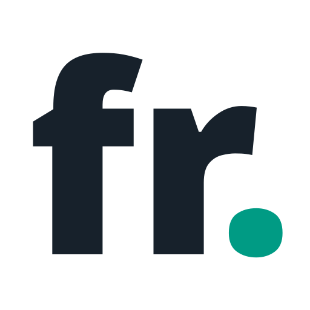
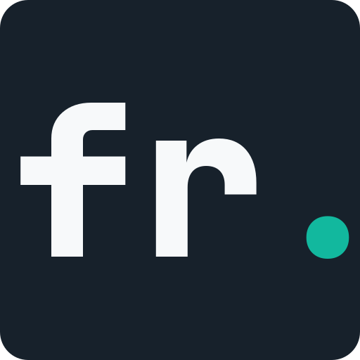

Identity study
fr. monogram prototypes
Three vector directions for a serious, compact FastAPI-Restly identity. Each mark is shown as a standalone asset, a documentation lockup, and at small interface sizes.

Direction 01
Editorial sans
An unboxed, heavy lowercase mark. The open letterforms feel established and direct; the teal period carries the only brand colour.
FastAPI-Restly
64
32
16

Direction 02
Code tile
A monospaced lettermark held inside a compact charcoal tile. It is the most immediately useful favicon and package avatar, with a slightly stronger developer-tool character.
FastAPI-Restly
64
32
16

Direction 03
Constructed ligature
A custom geometric mark that joins the crossbar of the f to the stem of the r. It is the most ownable direction, but also the furthest from familiar typography.
FastAPI-Restly
64